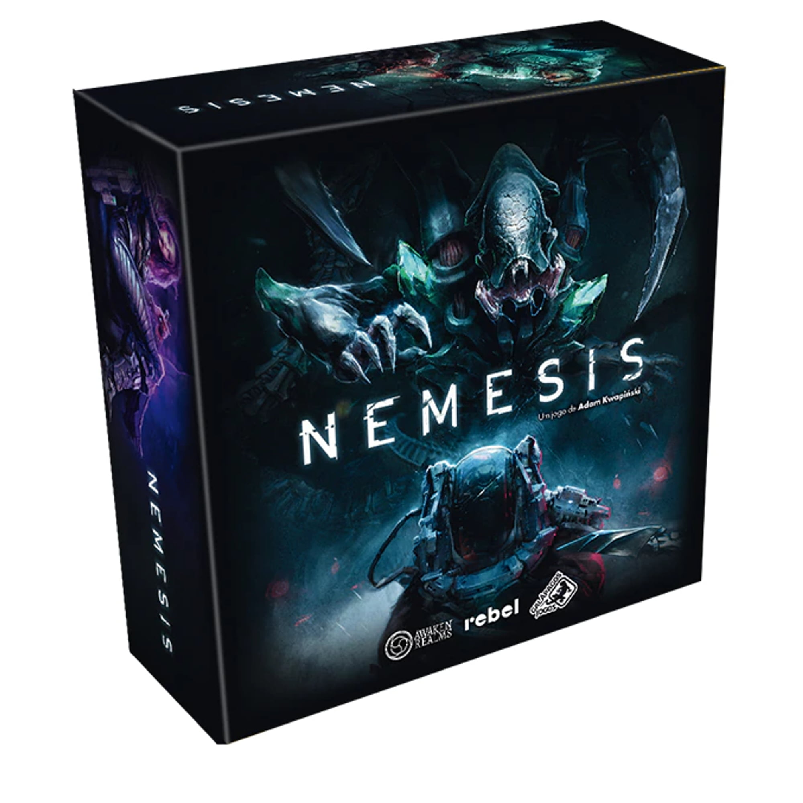
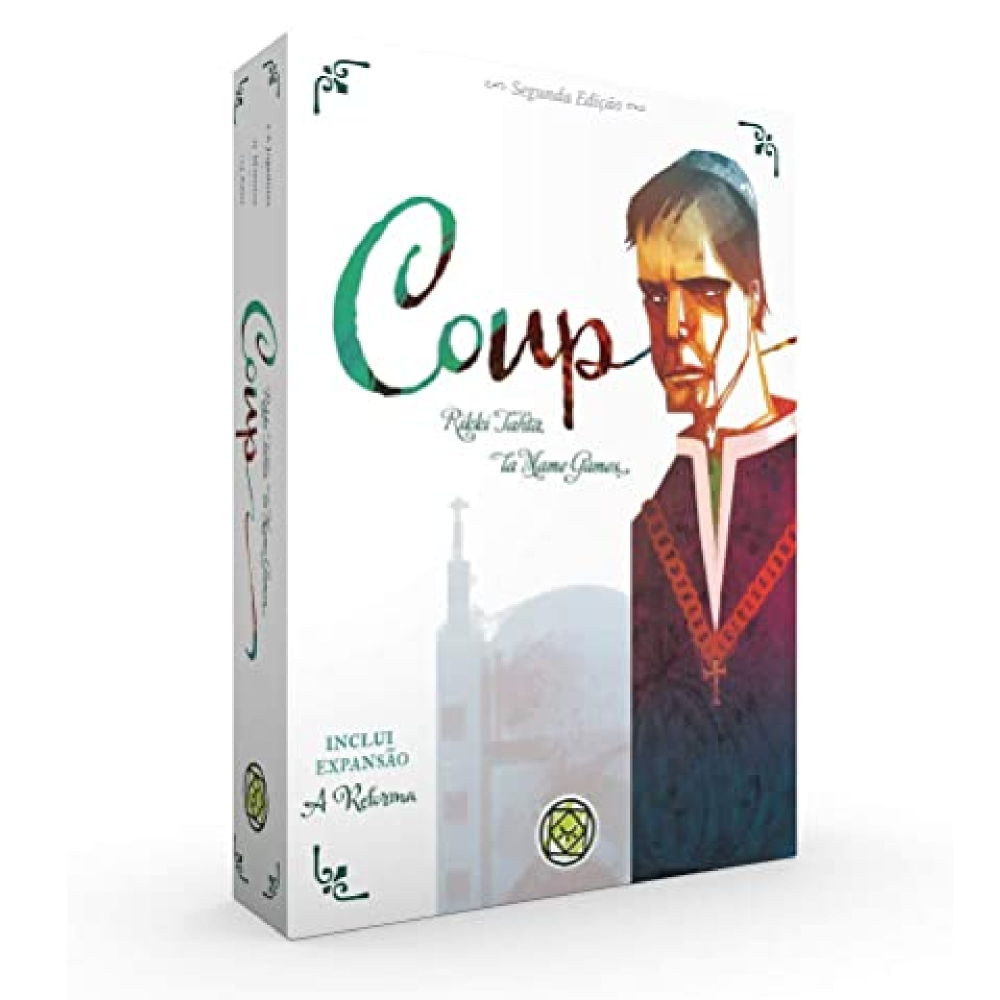
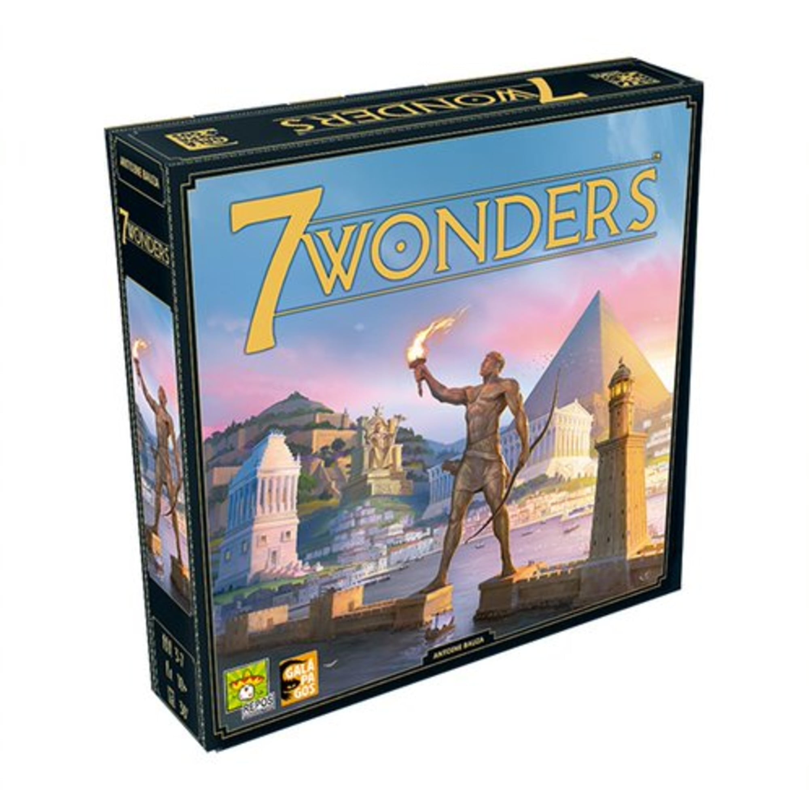
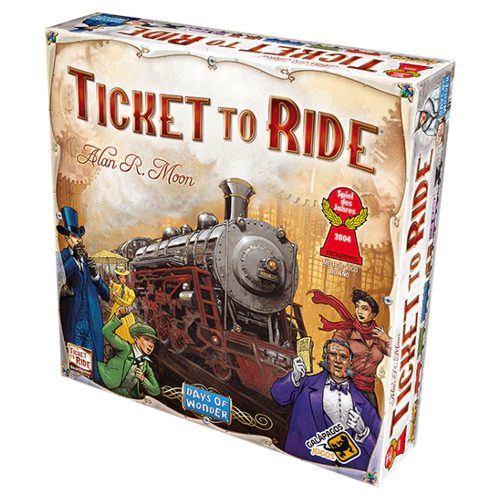
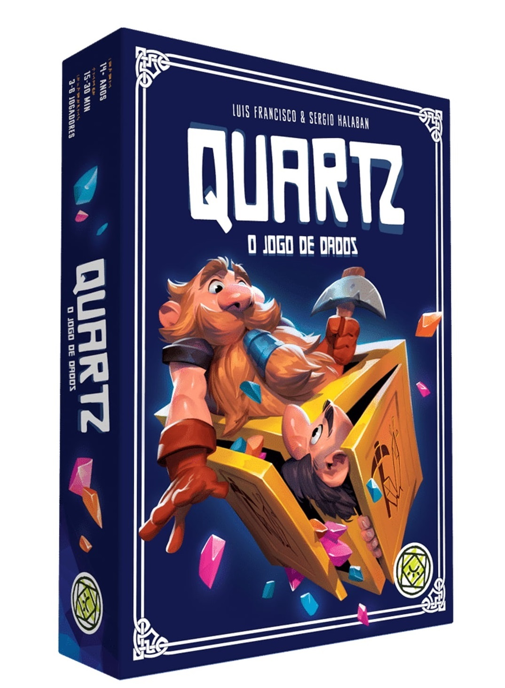
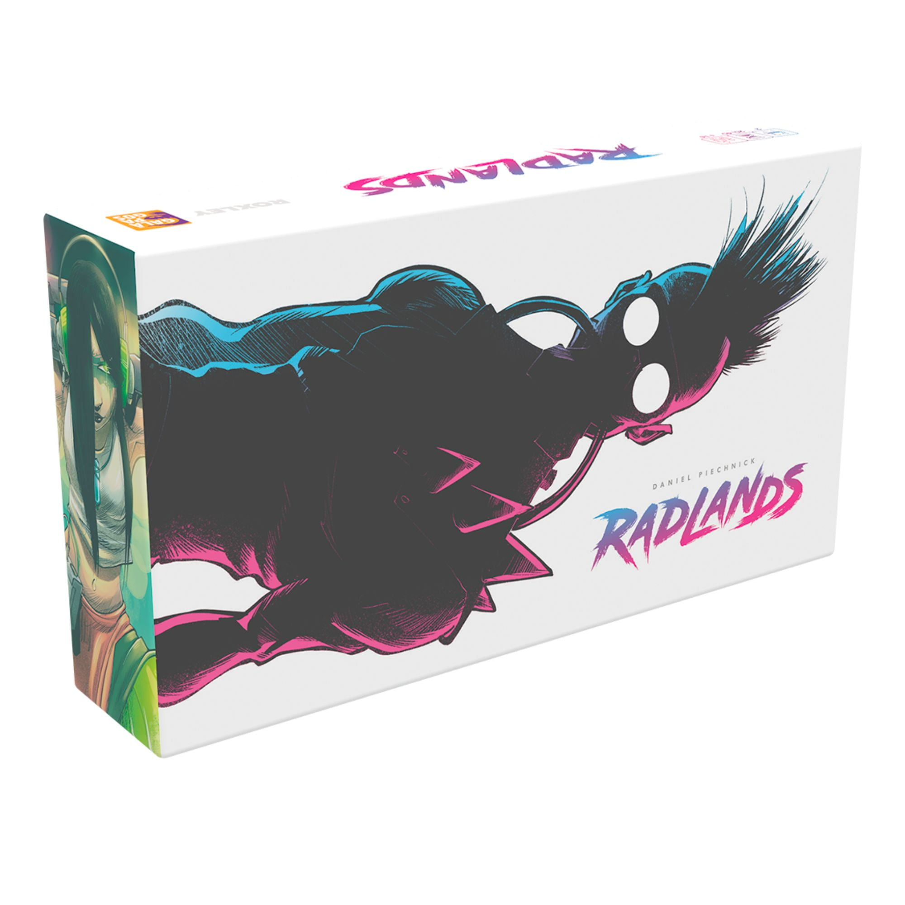

JOGO NEMESIS
A tripulação acorda da hibernação. A nave apresenta uma falha crítica e não pode continuar sua viagem. A missão é encontrar esse dano, repará-lo e voltar em segurança para a Terra. Só há um problema: um dos membros da tripulação está morto! Alguém arrombou sua cápsula de hibernação e puxou seu corpo para fora.
Para piorar, ruídos são ouvidos nos vastos corredores da nave. Eles não soam como nada que a tripulação já tenha ouvido antes... Quando se deparar com o pior dos horrores, você vai confiar no resto da tripulação?
Nemesis é um jogo de sobrevivência espacial, com miniaturas incríveis e regras inteligentes que incluem cooperação, blefe e traição, criando uma icônica aventura de ficção científica e horror altamente imersiva e emocionante!

COUP 2ª EDIÇÃO
Coup
Você é chefe de uma família em uma cidade-estado italiana administrada por uma corte fraca, corrupta e repleta de intrigas.
Você está tentando controlar a cidade através da manipulação, blefe e suborno para chegar ao poder. Seu objetivo é destruir a influência de todas as outras famílias, forçando-as ao exílio.
Apenas uma família sobreviverá...
Em Coup, você quer ser o último jogador com influência no jogo. A influência é representada por cartas de personagens com a face para baixo em sua área de jogo.
Cada jogador começa o jogo com duas moedas e dois de influência – ou seja, duas cartas de personagens viradas para baixo, o baralho de quinze consiste em três cópias de cinco personagens diferentes, cada um com um conjunto único de poderes: duque, assassino, condessa, capitão e embaixador.
Na sua vez, você pode ter qualquer uma das ações listadas para cada personagem, independentemente de quais personagens você realmente tenha na sua frente.
Com Coup: A Reforma, cada jogador deve declarar-se protestante ou católico e pode atingir apenas os membros da outra fé. A conversão é possível, no entanto, para si ou para outro jogador mediante o pagamento de uma doação de caridade para o Asilo. Como todas as facções, depois de ter eliminado a outra seita, basta descer no combate, por isso ainda há apenas um vencedor e não o segundo lugar.
Coup: A Reforma acrescenta uma nova fluida mecânica de equipe para Coup, permitindo os jogadores disputam com a sua fidelidade para tirar proveito ou buscar proteção nas fases iniciais do jogo.
Coup é um jogo fantástico principalmente para jogar em galera, eventos, festinhas e apresentar para novos jogadores. Ele é pequeno e dá pra levar facilmente. Quando enjoar de jogar com os personagens normais, dá pra colocar o Inquisidor. Cansou disso, coloque a religião e o jogo vai parecer novo.
Ele não demanda muita estratégia, nem grandes planos. É blefe em cima de blefe e você tentando passar os coleguinhas de mesa para trás. É engraçado que você pode não mentir e perder, mas também pode mentir e perder de primeira.

7 WONDERS
7 Wonders
Lidere uma das sete maiores cidades da Antiguidade.
Desenvolva o exército, a ciência, a cultura e a economia da sua civilização.
Após construída,será que a sua maravilha lhe trará glória por muitos milênios?
Zero tempo ocioso, diversão renovada a cada partida e um balanceamento perfeito independentemente do número de jogadores.
Escolha uma carta que se adéqüe à sua estratégia.
Jogue-a para expandir a sua cidade.
Passe as cartas restantes para o seu vizinho e receba novas cartas.
Tome decisões sábias para levar a sua civilização à prosperidade!
Viva toda a glória na Antiguidade Clássica desenvolvendo seu império e erguendo a Maravilha arquitetônica que transcenderá as eras. 7 Wonders é o jogo mais premiado em todo o mundo, nele sua missão é desenvolver descobertas científicas, conquistas militares, acordos comerciais e estruturas prestigiosas para levar sua civilização à glória.

TICKET TO RIDE
Com uma jogabilidade elegante, Ticket to Ride pode ser aprendido em 3 minutos, enquanto provê aos jogadores estratégia e decisões táticas todo turno.
Jogadores compram cartas de vários tipos de vagões, que devem ser usadas para reivindicar rotas de trens na América do Norte.
Quanto maiores as rotas, mais pontos elas valem.
Pontos adicionais são dados aqueles que completam os Bilhetes de Destino que conectam as cidades.
E o jogador que construir a rota continua mais longa, também ganhara pontos de bônus.
“As regras são simples o suficiente para escrever em um bilhete de trem – cada turno você pode : comprar mais cartas, reivindicar uma rota ou pegar Bilhetes de Destino adicionais” diz o autor de Ticket to Ride, Alan R. Moon. “A tensão vem de ser forçado entre balancear a ganância, colocando mais cartas em sua mão, e o medo, perdendo uma rota crítica para um rival.”
Ticket to Ride continua a tradição da Days of Wonders em jogos de tabuleiro, trazendo ilustrações e componentes de alta qualidade, incluindo : um grande tabuleiro com o mapa dos Estados Unidos, 225 trens customizados, 144 cartas ilustradas, e marcadores de pontos de madeira.

QUARTZ: O JOGO DE DADOS
Quartz: O Jogo de Dados
Parece que novas minas continuam sendo descobertas... Mas essa mina não é tão grande e todos os anões terão que correr para tirar o máximo proveito dela em apenas um dia! A aposta continua a mesma: Todos devem explorar a mina e vender na cidade os Cristais minerados Ao fim do dia. o anão que conseguir juntar mais dinheiro terá a mina todinha só para ele... Prontos para mais este desafio?

JOGO RADLANDS
Radlands
Em um mundo pós-apocalíptico cyberpunk, a luta pela sobrevivência é intensa - você está pronto para liderar sua tribo em Radlands?
Em Radlands, jogadores receberão três bases únicas para proteger. Você vence quando destrói todas as três bases do seu oponente.
O principal recurso no jogo é água. Você irá gastá-la para jogar pessoas e eventos, e para usar as habilidades de cartas que já possuir na mesa. Pessoas protegem suas bases e possuem habilidades úteis, enquanto eventos são efeitos poderosos que levam um certo tempo para acontecerem.
Ambos os jogadores compram cartas do mesmo baralho. Todas as cartas na sua mão podem ser jogadas na mesa ou utilizadas para efeitos rápidos de “sucatear”. Para vencer, você deve gerenciar suas cartas e água sabiamente.
